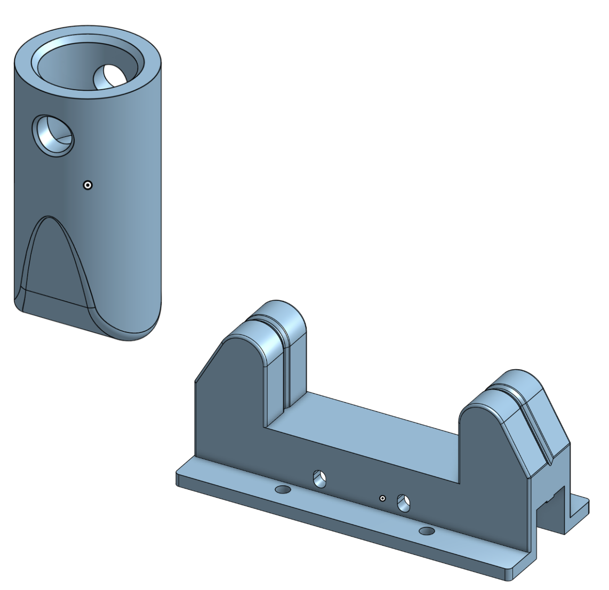
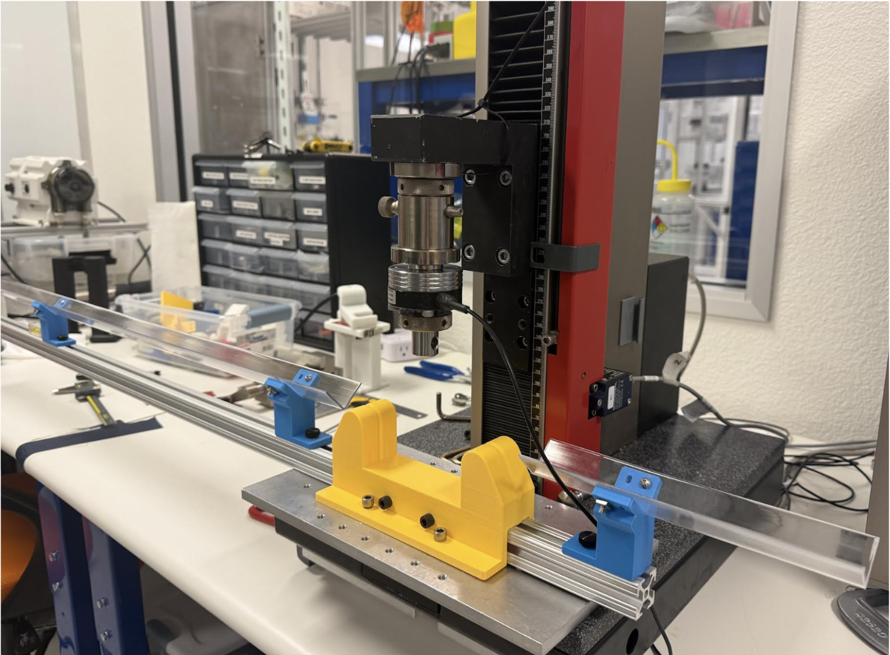
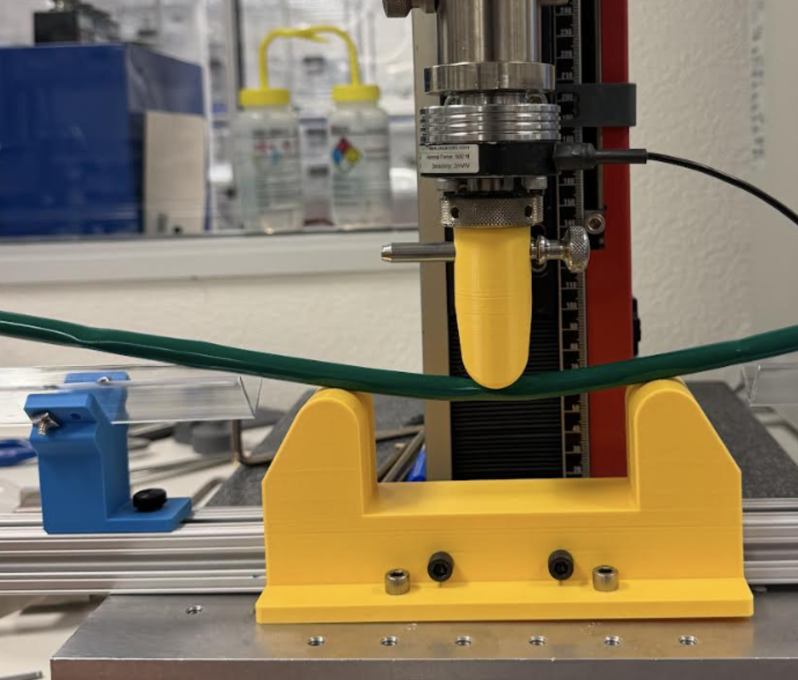
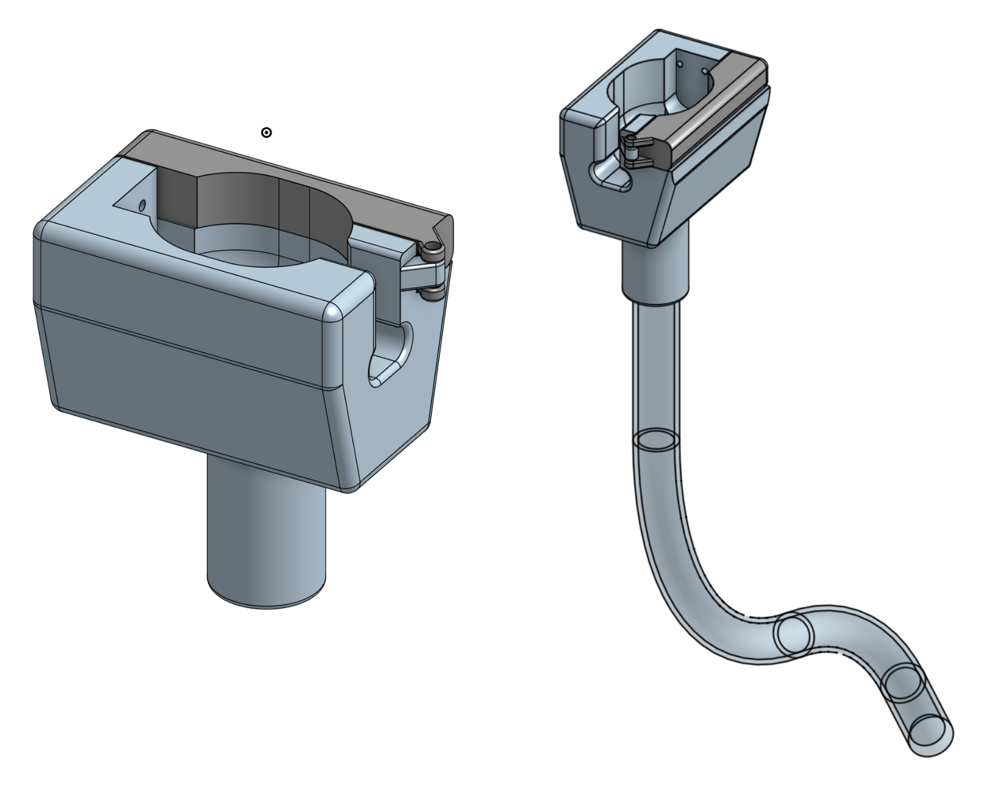
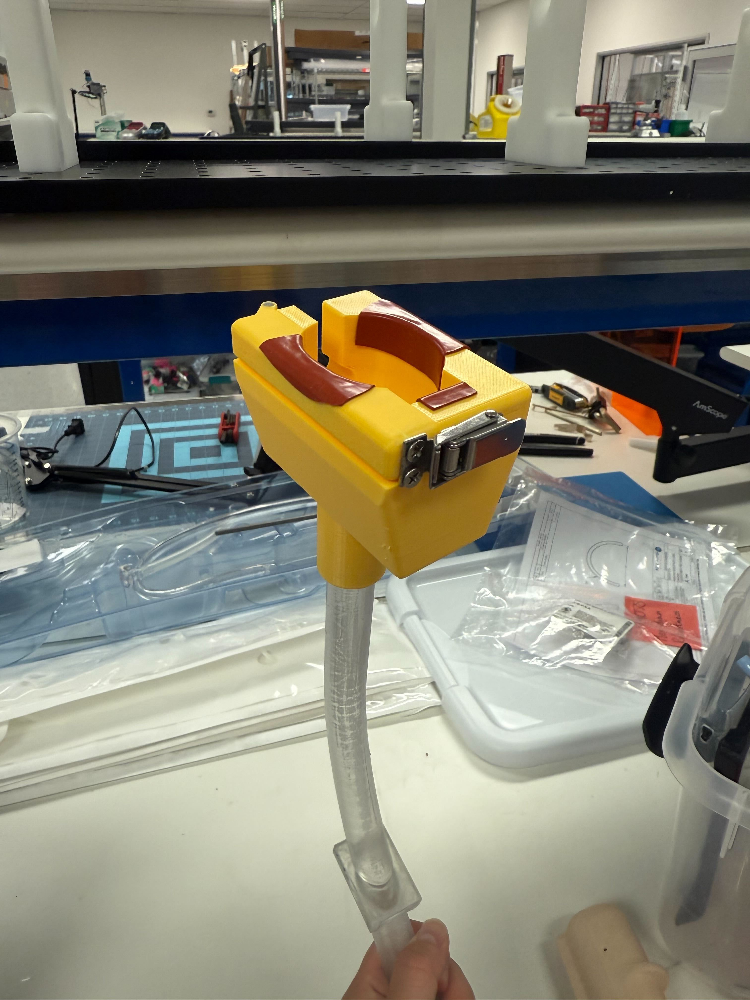
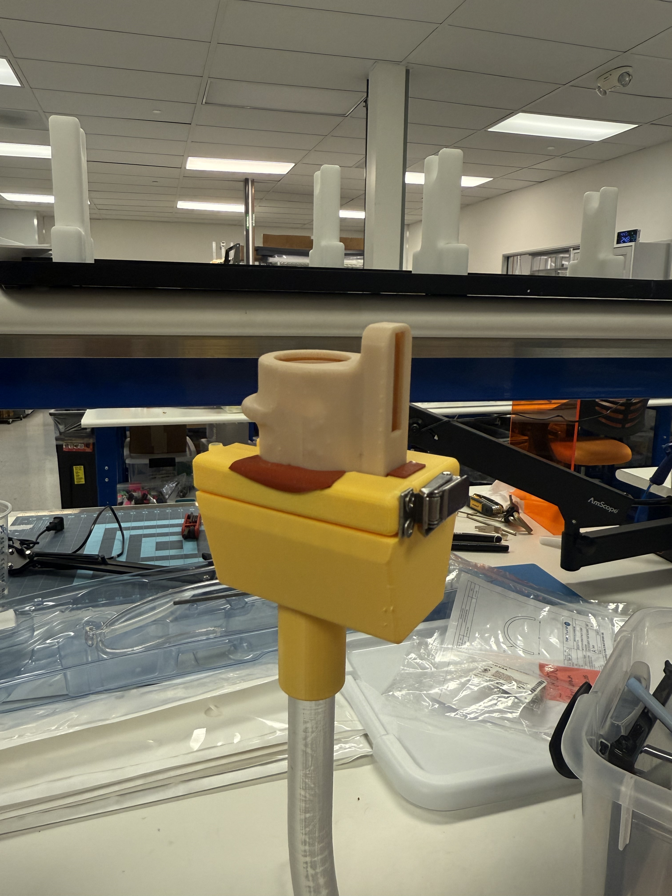

Three Point Bend STM



What
- Created an STM to characterize the flexural properties of various catheters
- Designed and iterated on a custom medical device test method in alignment with ASTM guidelines
How?
- Tested and operated a Zwick tensile testing machine
- Created a Zwick Test Program
- Modified fixtures using OnShape and Bambu 3D printing
- Conducted Gauge R&R
- Documented STM
Results
- Successfully tested Introducer catheters from PV&V1, PV&V2, and PV&V3, confirming measurable differences in flexural properties across batches
Trackability Fixture



What
- Modified fixtures of an existing STM to assess catheter navigation through tortuous anatomy
- Redesigned fixture to ensure compatibility with the Gen 1.5 handle
How?
- Designed on OnShape
- 3D printed components using the Bambu system
- Applied O-Ring Gland Calculator to achieve a secure fit between components
Results
- Enabled the new handle design to be tested using the existing STM